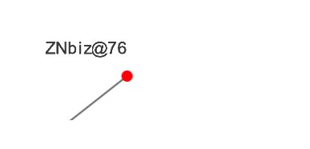

My experience of participating in GSoC 2016

Do not be afraid of anything. Him who is afraid the failure persecuted. Fear is sometimes permissible in everyday life. But at crucial moment you chase the fear away. Having doubted even for a moment, you will be defeated.
A little bit about the project...
Hello! I want to to tell a little about the "summer internships" for students and what I did this summer :)
I worked on the project from Computational Biology @ University of Nebraska-Lincoln. And these are my mentors who helped me in all the way of work David Tichy, Tom Helikar.
During this summer I needed perform two designs for library ccNetViz. All my code can be viewed here in this repository https://github.com/Znbiz/HelikarLab. And here is you can see the commits.
Intention.
Target 1. Algorithm for of drawing graph on a rectangular grid.
Before me stood next task: to develop an algorithm capable to draw graphs are on a rectangular grid. Drawing required such a manner that clusters be clearly visible. For a basis of offers to take the following algorithm algorithm for automatic drawing of biochemical networks. I has implemented his, the code can be viewed here the. By of this algorithm had to eventually refuse because his operating speed on graphs with the number of vertices is greater than 10 exp fall. This happened due to the fact that in the algorithm is based on a complicated enumeration method.
I suggested to move away from of this method and develop your own. My option was as search of a special number for each vertex, which would allow for one pass the vertices at a certain distance from each other. By this number was the number of of optimal ways extending through the top. Below are the pros and cons of this approach, and will show some examples of the algorithm.
Goodies:
- On small graphs of (<= 100 vertices) are clearly visible clusters
- On the several orders of magnitude faster than algorithms, which also draws on the gridе
- Simple to understanding
Minuses:
- Very slow if the graph more than ~ 200 nodes. As compared with the force algorithm
- In some graphs of bad is the division of into clusters
Conclusion:
The algorithm has been adopted, but not embedded in the library as well as the on Graphs with the number of vertices of> 1000 browser hangs for a long time. I have a assumption on how to improve my algorithm quality and speed of, but this need to spend more time. Algorithm code can be found here github
Examples:
Count "HGF" drawn by the force algorithm not on the grid
On the drawing the graph spent мс
Count "HGF" drawn by my algorithm on grid
On the drawing the graph spent мс
Count "Bronchiseptica" drawn by the force algorithm not on the grid
On the drawing the graph spent мс
Count "Bronchiseptica" drawn by my algorithm on grid
On the drawing the graph spent мс
Target 2. Development SDF generator for text.
Now the library ccNetViz draws signatures of vertices in one texture. This slows down the the rendering of the text with increasing the graph, and also makes it impossible to work with a variety of effects for text.
To achieve the goal, it was decided to split task into several ones of subproblems.
- Develop a generator SDF text more precise SDF atlas. What is the SDF can find out from the article Improved Alpha-Tested Magnification for Vector Textures and Special Effects. The main thing this algorithm been to realize such a way that it worked on the client side.
- Make the display of text such a way order to its texture is created for each character. That is drawing of each character separately.
- Integrate the above tools to the library.
SDF implements a simple algorithm in pure JavaScript to get the results which could not be incorporated into ccNetViz library. Since the processing time atlas containing 250 characters occupied a more than 10 seconds. After by me been a proposal to make all the calculations algortima using WebGL. The result of this decisions was the reduction in the processing time of the atlas 250 characters to a few tenths of a second ~ 0.6 seconds. The following is a working generator SDF.
Also, the possibility has been implemented in libraries to use the pre-generated on the server atlases.
All three methods of displaying the names of vertices included in the library. Pluses and minuses these three approaches displaying text.
Rendering the vertex the names on the same texture (as it was before)
Goodies:
- No need to access the server
- The average speed of of drawing
- Ability to specify your unique font
- Resource-costly work with text
- With an increase in quality of the text decreases
When the vertex of drawing names for each character uses its own texture. Texture is is taken from the SDF atlas generated on the client
Goodies:
- No need to access the server
- The text is displayed as vectorial. With an increase in he does not lose the quality.
- Ability to specify your unique font
- The possibility to apply to the text of various effects and more accurately configure the display of titles vertices
- Low of drawing speed compared with other methods. The higher the quality of of generation SDF atlas and the more is required draw the of symbols on the atlas, the more time is required.
When the vertex of drawing names for each character uses its own texture. Texture is is taken from the SDF atlas advance generated on the server
Goodies:
- High quality atlas SDF
- High-speed of drawing of text
- It is necessary to access the server
- You can not set your unique font
Comparison: To see the the name of the graph vertices increase
Rendering the vertex the names on the same texture (as it was before)
Time spent in the rendering graphics: мс
When the vertex of drawing names for each character uses its own texture. Texture is is taken from the SDF atlas generated on the client
Time spent in the rendering graphics: мс

When the vertex of drawing names for each character uses its own texture. Texture is is taken from the SDF atlas advance generated on the server
Time spent in the rendering graphics: мс

Conclusion:
I have suggestion that the quality atlas of drawing on the client side can be improved. In order to optimize and improvement of SDF algorithm WebGL take long, so as earlier no one this implemented the algorithm on WebGL. There are where to develop :)